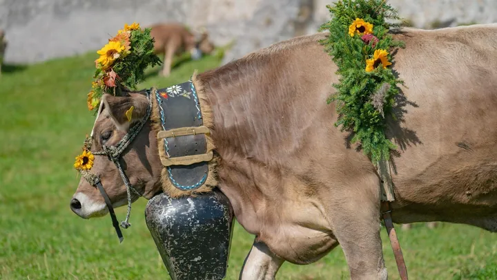

da sab 3 ott a dom 4 ott
La grande Desmontegada
La Grande Desmontegada di Pedavena torna il 3 e 4 ottobre 2026 con un fine settimana dedicato alle tradizioni della montagna bellunese e al suggestivo rito della transumanza.
 Indicazioni
Indicazioni
- Costi e prenotazioni
- Costo non indicato · Prenotazione non indicata
- Programma
- Programma da verificare. Apri la fonte ufficiale per orari e possibili aggiornamenti.
- In caso di maltempo
- Nessuna indicazione specifica pubblicata.
- Note
- Acquisito automaticamente dalla fonte.
L’EVENTO
Descrizione completa
La Grande Desmontegada di Pedavena torna il 3 e 4 ottobre 2026 con un fine settimana dedicato alle tradizioni della montagna bellunese e al suggestivo rito della transumanza.
L’appuntamento celebra il ritorno degli animali dai pascoli d’alta quota alle stalle della vallata, trasformando un antico momento della vita rurale in una festa capace di coinvolgere abitanti e visitatori. Tra il profumo dei prodotti di malga, il suono dei campanacci e le atmosfere della montagna, Pedavena sarà animata da iniziative pensate per far conoscere e riscoprire il patrimonio agricolo e gastronomico del territorio.
Sarà un’occasione per incontrare produttori e artigiani locali, assaggiare formaggi, miele e avvicinarsi alle attività che da sempre caratterizzano la vita d’alpeggio. Non mancheranno momenti dedicati al mondo degli animali e ai mestieri di un tempo, con laboratori e attività legate alla lavorazione del latte, del miele, alla tosatura delle pecore e alla coltivazione delle erbe.
La manifestazione offrirà inoltre l’opportunità di conoscere più da vicino la storia centenaria della Fabbrica di Pedavena proponendo viste guidate allo stabilimento. Il momento più atteso sarà naturalmente la Grande Desmontegada , quando gli animali faranno ritorno verso la vallata accompagnati dal caratteristico tintinnio dei campanacci.
Un appuntamento che conserva intatto il fascino della tradizione e che, anno dopo anno, permette di vivere la montagna attraverso i suoi sapori, i suoi saperi e la sua gente.
PROGRAMMA
SABATO 3 OTTOBRE 2026 Dalle ore 10.00 alle ore 16.30: Visite guidate alla Fabbrica in Pedavena Dalle ore 14.00 alle ore 18.00 presso il Parco della Birreria Pedavena:
Mercatini con formaggi, prodotti di malga, miele e artigianato
Laboratorio "La vita in un maneggio" per conoscere il mondo dei cavalli
Laboratorio del latte
Giochi di una volta e pony per bambini
Alle ore 14.00: Passeggiata gastronomica "Tra stale e magnar", un giro tra mestieri, luoghi e i gusti de na olta (su prenotazione accedendo al sito www.dolomitiprealpi.it) Dalle ore 17.00 alle ore 20.00: Dj-set Alle ore 20.00: "Cena dei Campanacci" in Birreria Pedavena (su prenotazione accedendo al sito www.dolomitiprealpi.it)
MENU "CENA DEI CAMPANACCI": Antipasto : Formaggi (Morlacco e Mezzano), ricotta con miele e mostarda di mela prussiana. Primo : risotto con piccoli frutti Secondo : polpettine di "pastin" e salsa di formaggio fuso con cips di verdure Dolce : panna cotta con yogurt e frutti di bosco Ogni portata sarà accompagnata da un vino abbinato
DOMENICA 4 OTTOBRE Dalle ore 10.00 alle ore 16.30: Visite guidate alla Fabbrica in Pedavena Dalle ore 10.00 alle ore 18.00 presso il Parco della Birreria Pedavena:
Alle ore 15.00: La grande sfilata della DESMONTEGADA
IL PROGRAMMA
Programma e orari
Appuntamenti raccolti dalle fonti elencate. Dove manca un orario, non è ancora disponibile in questa scheda.
Programma pubblicato
- 2026-10-03 — 2026-10-04 · 10:00:00
INFORMAZIONI UTILI
Prima di partire
- Controllare la fonte prima di partire.
ORGANIZZAZIONE